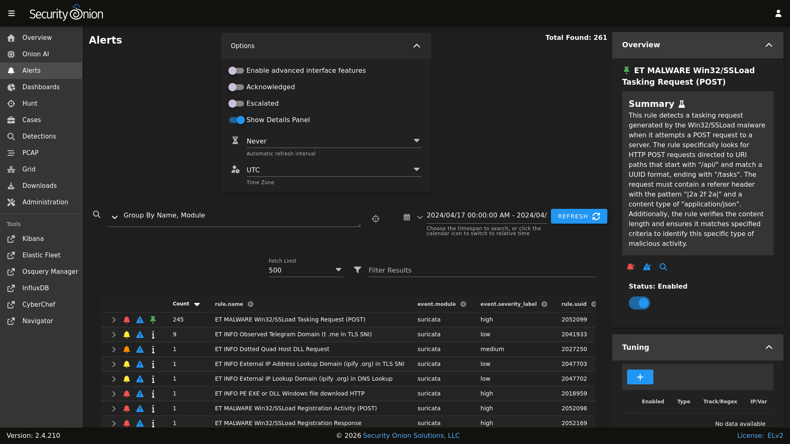
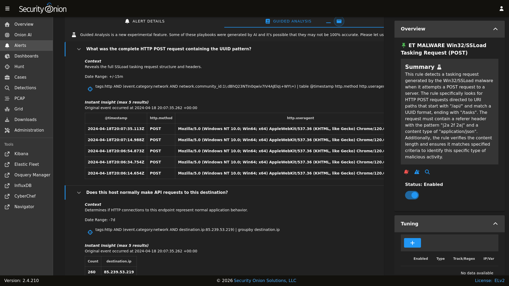

Alerts
Security Onion Console (SOC) includes an Alerts interface which gives you an overview of the alerts that Security Onion is generating. You can then quickly drill down into details, pivot to Hunt or the PCAP interface, and escalate alerts to Cases.

Options
At the top of the page, there is an Options menu that allows you to set several different options for the Alerts page.
{kind=link}

Toggles
The first toggle is labeled Enable advanced interface features. If you enable this option, then the interface will show more advanced features similar to Dashboards and Hunt. This includes an extra toggle labeled Automatically apply filters, groupings, and date ranges.
Enabling the Acknowledged toggle will only show alerts that have previously been acknowledged by an analyst.
Enabling the Escalated toggle will only show alerts that have previously been escalated by an analyst to Cases.
Finally, the Show Details Panel toggle controls the Details panel on the right side. For more information, see the Details Panel section below.
Automatic Refresh Interval
Another option is the Automatic Refresh Interval setting. When enabled, the Alerts page will automatically refresh at the time interval you select.
Time Zone
Alerts will try to detect your local time zone via your browser. You can manually specify your time zone if necessary.
Query Bar
The query bar defaults to Group By Name, Module which groups the alerts by rule.name and event.module. You can click the dropdown box to select other queries which will group by other fields.
On the right side of the query bar is a hunt button that will start a new hunt based on the current query.
If you would like to save your own personal queries, you can bookmark them in your browser. If you would like to customize the default queries for all users, please see the SOC Customization section.
Time Picker
By default, Alerts searches the last 24 hours. If you want to search a different time frame, you can change it in the upper-right corner of the screen.
Details Panel
The details panel on the right side shows details for the currently selected alert. This includes an AI summary (if available) and options for tuning the rule that generated the alert. This functionality is part of Detections so you can read more in that section. This panel can be disabled under the Options dropdown (see above).
Data Table
The remainder of the page is a data table that starts in the grouped view and can be switched to the detailed view. Both views have some functionality in common:
Clicking the table headers allows you to sort ascending or descending.
Starting from the left side of each row, there is an arrow which will expand the row to show more details.
To the right of that arrow is a bell icon that acknowledges the alert. That alert can then be seen by selecting the
Acknowledgedtoggle at the top of the page. In theAcknowledgedview, clicking the bell icon removes the acknowledgement.To the right of that is a blue exclamation icon that escalates the alert to Cases and allows you to create a new case or add to an existing case. If you need to find that original escalated alert in the Alerts page, you can enable the
Escalatedtoggle (which will automatically enable theAcknowledgedtoggle as well).To the right of that is an information icon that populates the Details Panel on the right with information about the alert.
Security Onion Pro users will find one more button. The last is a computer chip icon that investigates the alert with Onion AI.
Clicking a value in the table brings up a context menu of actions for that value. This allows you to refine your existing search, start a new search, or even pivot to external sites like Google and VirusTotal.
You can adjust the
Rows per pagesetting in the bottom right and use the left and right arrow icons to page through the table.
Note
If you are in the grouped view and looking at an alert that has multiple instances (the Count column is greater than 1) and you then click the arrow to expand the alert, it will show you the details for the most recent instance of that alert. If you need to see details for the other instances of the alert, then you will need to switch from the grouped view to the detailed view.
Guided Analysis
When you click the arrow to expand the alert, it starts on the ALERT DETAILS tab but you can switch to the GUIDED ANALYSIS tab which leverages Playbooks to show you plays associated with the alert. These plays include questions which help guide your investigation. You can expand all questions at once using the maximize button on the right side of the GUIDED ANALYSIS tab.
Each question has an associated query and the results of that query will be displayed to help you answer the question. A maximum of 5 query results will be displayed but if you want to see more, then you can click the crosshairs icon to open the query in Hunt. This also allows you to tweak the query if necessary. If you don’t get any results, you could try changing the date range or other query parameters. In some cases, the query may be looking for data that you don’t currently collect. For example, the query may be looking for endpoint data and so you may need to deploy the Elastic Agent to start collecting this information.
Note
To see Guided Analysis in action, check out our sneak peek video at https://youtu.be/SLGRB3PxB-o.
For more information about Playbooks, please see the Detections section.
Warning
Guided Analysis is a new experimental feature. Some of these playbooks were generated by AI and it’s possible that they may not be 100% accurate. Please let us know if you see any issues.
{kind=link}

Grouped View
By default, alerts are grouped by whatever criteria is selected in the query bar. Clicking a field value and then selecting the Drilldown option allows you to drill down into that value which switches to the detailed view. You can also click the value in the Count column to perform a quick drilldown. Note that this quick drilldown feature is only enabled for certain queries.
If you’d like to remove a particular field from the grouped view, you can click the trash icon at the top of the table to the right of the field name.
Detailed View
If you click a value in the grouped view and then select the Drilldown option, the display will switch to the detailed view. This shows all search results and allows you to then drill into individual search results as necessary. Clicking the table headers allows you to sort ascending or descending. Starting from the left side of each row, there is an arrow which will expand the result to show all of its fields. To the right of that arrow is the Timestamp field. Next, a few standard fields are shown: rule.name, event.severity_label, source.ip, source.port, destination.ip, and destination.port. Depending on what kind of data you’re looking at, there may be some additional data-specific fields as well.
When you click the arrow to expand a row in the Events table, it will show all of the individual fields from that event. Field names are shown on the left and field values on the right. When looking at the field names, there are two icons to the left. The Groupby icon, the left most icon, will add a new groupby table for that field. The Toggle Column icon, to the right of the Groupby icon, will toggle that column in the Events table, and the icon will be a blue color if the column is visible. You can click on values on the right to bring up the context menu to refine your search or pivot to other pages.